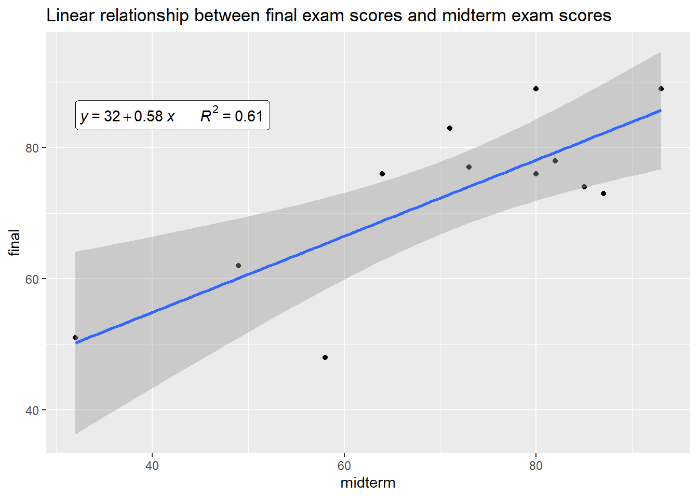
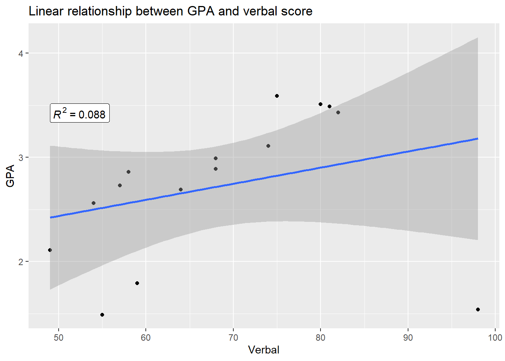
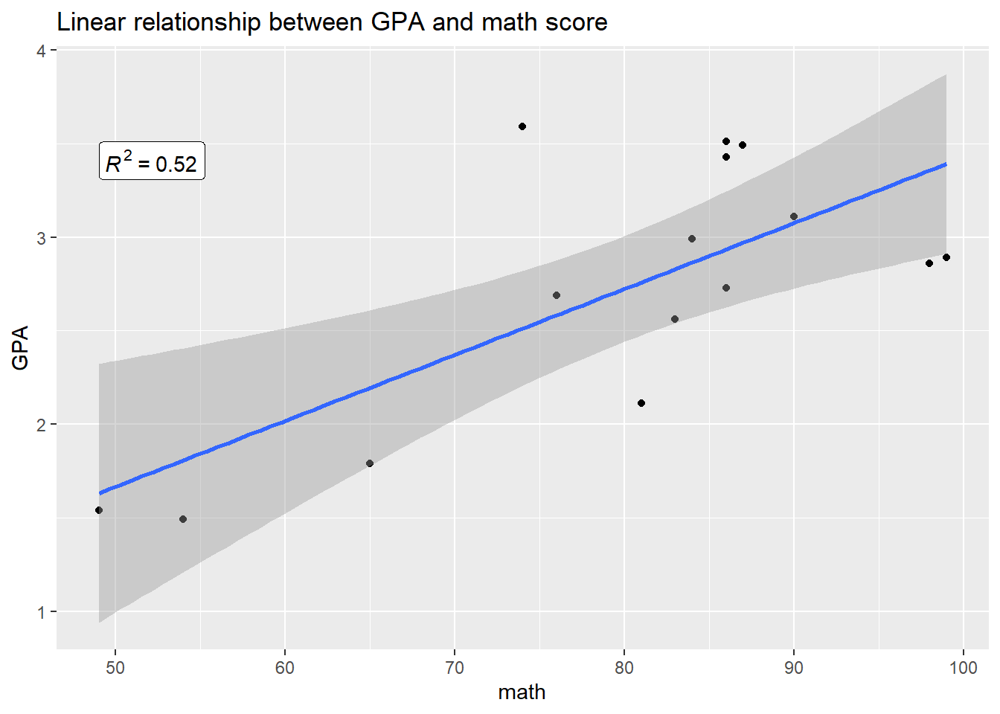
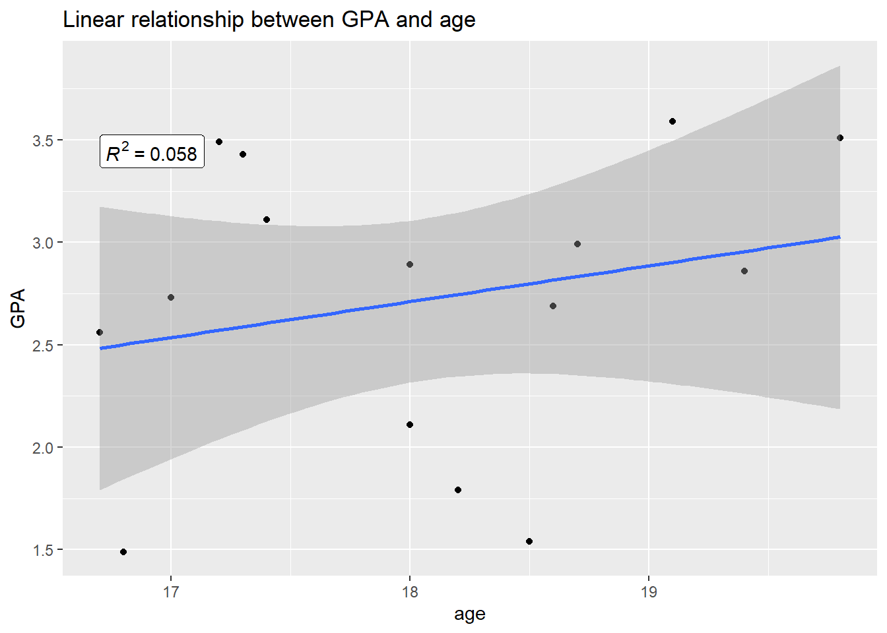

Linear regression is one of the most common types of machine learning methods. It is a supervised learning algorithm used to predict a continuous dependent variable (\(Y\)) based on the value of one or more independent variables (\(X_i\)) which can be continuous or discrete. It attempts to model the relationship between the variables by fitting a linear equation to the observed data.
A linear regression model usually takes the form:
For linear regression models with one quantitative predictor
\[y=\beta_0+\beta_1X+\epsilon\] where:
library(tidyverse)
library(knitr)
library(ggplot2)
library(ggpubr)
library(ggthemes)
library(caTools)The following are the scores that 12 students obtained on the midterm and final examination in a course in statistics.
| midterm | final |
|---|---|
| 71 | 83 |
| 49 | 62 |
| 80 | 76 |
| 82 | 78 |
| 80 | 89 |
| 87 | 73 |
| 64 | 76 |
| 93 | 89 |
| 73 | 77 |
| 32 | 51 |
| 85 | 74 |
| 58 | 48 |
Fit a linear regression to the data.
(Intercept) midterm
31.6094612 0.5816001 Therefore \(\widehat{final}=31.6095+0.5816midterm\) is the best fit that would predict a students final exam based on his/her midterm exam score
Interpret the regression parameters
For every additional mark in the midterm exam score, a students final exam score increases by 0.5816 points.
Test for the significance of model fit
we test the hypothesis
\(H_0:\) Regression fit is not significant
\(H_1:\) Regression fit is significant
using the f-statistic
value numdf dendf
15.82578 1.00000 10.00000 The F-statistic is 15.83 and the critical value from the f-distribution table is 4.96. The f-statistic is greater than the critical value. Therefore we reject \(H_0\) and conclude that the model is indeed significant.
How much of the variation is accounted for by the predictor.
[1] 61.279From the summary 61.28% of the variation in the final exam score is accounted for by the midterm exam score.
What is the correlation between midterm exam scores and final exam scores.
midterm final
[1,] 0.782809 1The correlation is 0.7828. This indicates a strong relationship between midterm scores and final scores.
NB: Correlation explains the strength of the relationship between an independent and dependent variable. R-squared explains to what extent the variability of one variable explains the variability of the second variable, therefore showing if the predictor variable is significant in predicting the response variable
Predict the final exam score for a student who scored 84 marks in the midterm exam
1
80.46387 Find the 95% confidence interval for condition mean of final exam score obtained by students who obtained 80 marks in the midterm exam.
$fit
fit lwr upr
1 78.13747 71.91261 84.36233
$se.fit
[1] 2.79375
$df
[1] 10
$residual.scale
[1] 8.581803The 95% C.I becomes [71.913,84.362]
Find the 95% prediction interval for the final exam score obtained by students who obtained 80 marks in the midterm exam.
fit lwr upr
1 78.13747 58.0283 98.24664The 95% P.I becomes [58.028,98.247]
NB: When we create confidence intervals for parameters, but when we’re predicting a single value, its not a parameter. So we call it a prediction interval
Summary of the model in a plot
ggplot(midterm,aes(x=midterm,y=final))+geom_point()+geom_smooth(method=lm)+stat_regline_equation(aes(label=paste(..eq.label.., ..rr.label..,sep = "~~~~~~~")),position = "identity",geom = "label")+labs(title="Linear relationship between final exam scores and midterm exam scores")
In simple linear regression we only consider one predictor variable. When we include more than one predictor variable, we have what is now a multiple linear regression model. Multiple linear regression allows us to investigate the joint effect of several predictors on the response variable.
NB: as with simple linear regression we have one response variable.
General form:
\[y=\beta_0+\beta_1x_1+......\beta_k xk+\epsilon\] Where:
Many universities in the US develop regression models for predicting GPA of incoming freshman. This estimated GPA can then be used to make admission decisions. Below are data for 15 students showing their GPA results(\(Y\)); scores for two exams verbal(\(x_1\)), mathematics(\(x_2\)) and age of students (\(x_3\)).
Parsed with column specification:
cols(
y = col_double(),
x1 = col_double(),
x2 = col_double(),
x3 = col_double()
)| GPA | Verbal | math | age |
|---|---|---|---|
| 3.49 | 81 | 87 | 17.2 |
| 2.89 | 68 | 99 | 18.0 |
| 2.73 | 57 | 86 | 17.0 |
| 1.54 | 98 | 49 | 18.5 |
| 2.56 | 54 | 83 | 16.7 |
| 3.43 | 82 | 86 | 17.3 |
| 3.59 | 75 | 74 | 19.1 |
| 2.86 | 58 | 98 | 19.4 |
| 1.49 | 55 | 54 | 16.8 |
| 2.11 | 49 | 81 | 18.0 |
| 2.69 | 64 | 76 | 18.6 |
| 3.51 | 80 | 86 | 19.8 |
| 2.99 | 68 | 84 | 18.7 |
| 3.11 | 74 | 90 | 17.4 |
| 1.79 | 59 | 65 | 18.2 |
State the estimated regression model.
(Intercept) Verbal math age
-2.70465476 0.02195390 0.03862480 0.04669531 \[GPA=-2.7047+0.02195verbal+0.0386math+0.0467age\]
Is there a linear relationship between GPA and the examination scores and age? State the hypothesis and test statistic.
The hypothesis to be tested is
\(H_0\)-regression fit is not significant
\(H_1\)-regression fit is significant
Using the f-statistic as the test statistic
value numdf dendf
8.828339 3.000000 11.000000 The calculated F-statistic is 8.828. From the f-distribution table, the critical value is 4.07. Therefore the F-statistic is greater than the critical value. So we reject \(H_0\) and conclude that there is a linear relationship between GPA ,the verbal and math score and age of a student.
Interpret the regression co-efficients
Verbal - After adjusting for the math score and age of student, the average GPA increases by 0.021954 points for every additional point in the verbal score.
math - After adjusting for the verbal score and age of student, the average GPA increases by 0.021954 points for every additional point in the math score.
age - After adjusting for the math score and verbal score, the average GPA increases by 0.046695 points for every additional year in the age of a student
Are both scores and age individually related to GPA?
The hypothesis to be tested:
\[H_0:\beta_j=0\]
\[H_0:\beta_j\neq0\] where \(j=1,2...n\)
Estimate Std. Error t value Pr(>|t|)
(Intercept) -2.70465476 2.193858648 -1.2328300 0.2433373351
Verbal 0.02195390 0.009025470 2.4324389 0.0332655987
math 0.03862480 0.008215196 4.7016284 0.0006484308
age 0.04669531 0.123893994 0.3768973 0.7134194757From the summary above.
verbal The p-value is less than 0.05. therefore we reject \(H_0\) and conclude that verbal score is a significant predictor for GPA.
math .The p-value is less than 0.05. Therefore we reject \(H_0\) and conclude that verbal score is a significant predictor for GPA.
age The p-value is more than 0.05. Therefore we fail to reject \(H_0\) and and conclude that age is not a significant predictor for GPA.
Calculate the co-efficient of multiple determination and interpret it
[1] 0.6265174We see that co-efficient of multiple determination is 0.6265. Therefore 62.65% of the variation in the GPA score is explained by the set of predictor variables.
Estimate the GPA of a 17.5 year student with a verbal score of 82 a mathematics score of 84.
1
3.157217 3.157217
Summary of the model using a plot
ggplot(gpa,aes(x=Verbal,y=GPA))+geom_point()+geom_smooth(method="lm")+stat_regline_equation(aes(label=paste(..rr.label..)),position = "identity",geom = "label") +labs(title = "Linear relationship between GPA and verbal score")
ggplot(gpa,aes(x=math,y=GPA))+geom_point()+geom_smooth(method ="lm")+stat_regline_equation(aes(label=paste(..rr.label..)),position = "identity",geom = "label")+labs(title = "Linear relationship between GPA and math score")
ggplot(gpa,aes(x=age,y=GPA))+geom_point()+geom_smooth(method = "lm")+stat_regline_equation(aes(label=paste(..rr.label..)),position = "identity",geom = "label")+labs(title = "Linear relationship between GPA and age") 
Regression analysis usually treats the predictor variables as numerical values or quantitative variables. However in some cases one may want to include an attribute/categorical variable to explain a response variable.
dummy variable/indicator variable- is a variable that takes on the value 0 or 1. It represents a categorical variable with two distinct categories/levels
binary predictor-is a variable that takes on only two possible values. e.g gender(male or female), treatment(yes or no), smoking(smoker or non smoker)
General form
\[y=\beta_0+\beta_1 x_1+\beta_2 x_2+\epsilon\] Where:
\(y\)=response variable
\(\beta_0\)=constant/ intercept
\(x_1\)=quantitative predictor variable
\(x_2\)=qualitative predictor variable
\(\beta_1\)=co-efficient
\(\beta_2\)=differential intercept coefficient; it measures the differential effect of the categorical variable i.e in general \(\beta_2\) shows how much higher(lower) the mean response line is for the \(1^{st}\) category compared to the line for the \(2^{nd}\) category (base category) for any given value of the categorical variable.
\(x_i2 =1\) if the response is in the \(1^{st}\) category
\(x_i2=0\) if the response is in the \(2^{nd}\) category
The average value of the response of individuals in the \(2^{nd}\) category is:
\(E[Y|X_1,X_2=0]=\beta_0+\beta_1 X_1\) <-**base/category inference
While the average value of the response of individuals in the \(1^{st}\) category is:
\(E[Y|X_1,X_2=1]=\beta_0+\beta_1 X_1+\beta_2\)
An economist wanted to see the relationship between the speed with which a particular insurance innovation is adopted (\(y\)) (measured in months) and the worth of the insurance firm (\(x_1\)) (in million of dollars) as well as the type of firm (\(x_2\)). He studied 6 mutual firms and 6 stock firms and information obtained is presented above
| speed | worth | type |
|---|---|---|
| 17 | 151 | mutual |
| 26 | 92 | mutual |
| 21 | 175 | mutual |
| 22 | 104 | mutual |
| 12 | 210 | mutual |
| 4 | 290 | mutual |
| 28 | 164 | stock |
| 15 | 272 | stock |
| 11 | 295 | stock |
| 31 | 85 | stock |
| 20 | 166 | stock |
| 30 | 124 | stock |
We assign a dummy variable to the type of firm. 1 if it is mutual, 0 if it is stock. This will help impprove model accuracy.
Fit the regression coefficients
(Intercept) worth Type
40.82316274 -0.09940233 -6.89163261 The fit of the model is thus \(\widehat {speed\ of\ adoption} =40.823-0.0994worth\ of\ firm-6.892 type\ of\ firm\)
Interpret the regression coefficients
While holding type of firm constant, for every additional $1 million in worth of firm, the time a firm takes to adopt an insurance innovation reduces by 0.1 months. Also while holding the worth of firm constant, the time mutual firm to adopt an innovation is on average 6.98 months shorter than the time taken by the stocks firms.
Test for the significance fit
The hypothesis to be tested is
\(H_o\): regression is not significant
\(H_1\): regression is significant
value numdf dendf
46.84907 2.00000 9.00000 From the summary the f statistic is 46.85. From the f-distribution table the critical value is \(4.26\). The f-statistic is greater than the critical value. ,Therefore we reject \(H_0\) and conclude that the regression fit is indeed significant.
Are the predictors individually associated with the response.
The hypothesis to be tested
\[H_0:\beta_j=0\]
\[H_1:\beta_j \neq0\] where \(j=1,2...n\)
Estimate Std. Error t value Pr(>|t|)
(Intercept) 40.82316274 2.31438063 17.638915 0.00000002741261
worth -0.09940233 0.01101488 -9.024367 0.00000835123047
Type -6.89163261 1.57840681 -4.366195 0.00180707598422worth- The p-value is less that 0.05, therefore we reject \(H_0\) and conclude that the worth of a firm is individually associated with the the speed with which a particular insurance innovation is adopted.
Type of firm - The p-value is less than 0.05, therefore we reject \(H_0\) and conclude that the type of firm is individually associated with the speed with which a particular insurance innovation is adopted.
Estimate the time that lapses before a mutual firm worth $173 million adopts on insurance innovation.
1
16.73493 we get \(16.73 \sim 17\)months